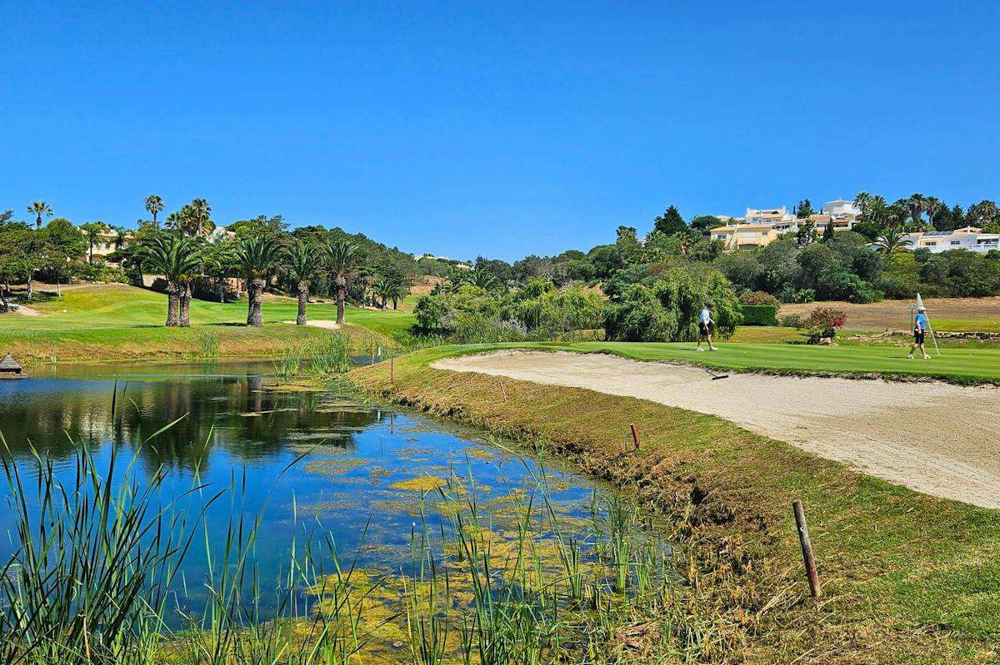

First call · on the resort
Best locationSanto António
The course at Quinta da Encosta Velha. An 18-hole, hilly test with water and steep slopes; the resort recommends a buggy.
Photo: SA Resorts
HandicapOrdinary visitor rule not found
From accommodationSame resort · 1.8 km / 4 min by road to reception
March guide price€73 / person; €309 for 4 + 2 buggies
Ask the golf shop whether all four can play a social round, what proof of handicap they need, and whether the €309 buggy offer applies on your date. A tournament’s 28 limit does not prove the ordinary visitor rule.